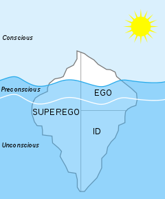
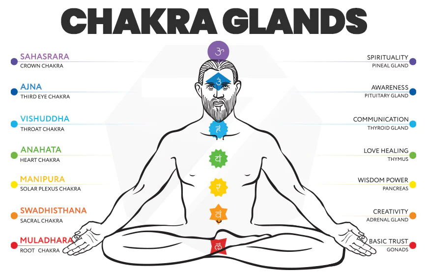

Why you should meditate?
What is meditation?
I will put this into simple words meditation means remaining unrelated with your thought process. The moment when no thoughts go through your mind , this moment is called mediation.
How meditation will help you?
I have studied a bit of psychology in college , you may get this question "wait what is the relation between meditation and psychology?" , a neurologist - Sigmund Freud put up a theory on three states of mind. He divided human conscious into three levels of awareness conscious, preconscious, and unconscious.

Most of the time humans are in the unconscious state of mind. This unconscious mind contains feelings,
thoughts, urges, memories and contents that are unacceptable or unpleasant, such as feelings of pain,
anxiety, or conflict. Meditation will help you to live in the moment or in the conscious state of mind
without all those unpleasant thoughts and feelings.
Every human has to go through some sort of struggle to see the better side of life. And every problem has a
solution, finding the solution is hardest part of it. But when you are calm and composed you can do it
effortlessly, you will have a balance between chaos and calmness.
How to start meditating?
There is a Japanese way to meditate where you can keep a candle in front of you and try to concentrate on the flame. This is basic meditation you can do. You may get thoughts while concentrating on the flame, but try to concentrate and limit the number of thoughts. This will help you to focus on the things you do or the work you do.
Another way is to focus on your breath. We have to concentrate on our breath and feel the depth of our breathe. When you start breathing meditation you may feel that our breath is just reaching our neck or your lungs. But when you do it for a year or two you will feel the breath going till our abdominals. This feeling of breath in your abdominals will take years of practice. In this process of meditation you will see a lot of changes like the amount of concentration, the way you think and most importantly you will notice your inner body-blood flowing, air moving and more simple movements inside your body. The brighter the things you see while you are meditating the deeper your meditation is. It does not mean that you cannot meditate if you can't see anything bright, it takes time and practice reach to this state.
The Chakra Talk…
Read my blog Diving deeper into meditation if you are not familiar with Chakras. The Agna chakra is one of the seven chakras. It is pronounced as 'Agya chakra' or Ajna. The Agna chakra or the third eye chakra will start to get activated when we start breathing. Not everybody feel the same when the agna chakra gets activated, everyone has their own experience. It will help in supressing materialistic desires. Humans cannot completely kill their desires but meditation will help you supress or reduce them. When you meditate and activate agna chakra energy will be stored in it. As you meditate and activate agna chakra the energy in it will be increased as well. When this energy gets bigger and bigger it will burst, so you have to give a path for agna to flow the energy. But what happens when it bursts? All the things that agna chakra helped you like supressing desires , lust. All of them comeback. To not let this happen we have to activate Muladhara Chakra. But why Muladhara chakra? “Mula” means source and “adhara” means foundation. In the structure of the body this is the base. If you wish to grow you need to cultivate this.
Muladhara chakra is the first chakra among the seven chakras. It is where human life starts and we have to activate or awaken it. This chakra gives us the physical strength we need, it gives us control over hunger, sleep and it also gives us confidence and stability. Just like this we have to activate all the chakras in line Muladhara, Svadhisthana, Manipura, Anahata, Vishuddha and finally Agna. If we don't open a path for the energy to flow we may get sick ,or emotional imbalance can happen.
I suggest you not to do concentrate on the chakra's, it is better to focus on the breathing meditation. I never try to activate the chakras but sometimes when i concentrate on the ajna chakra i feel like ants are moving all over that area or like a force in that area. Few people may also get headache when they concentrate on ajna chakra because they are concentrating on the area of the ajna chakra with their eyes.
One chakra i didn't mention is the Sahasrara chakra which is placed on top of our head. When you normally meditate and concentrate on the ajna chakra you will feel a sensation of something on top of your head. When you concentrate on it you will feel like your energy is flying in the air or someone pulling your energy from above. But if something wrong happens with Sahasrara chakra you may get mentally disturbed. You may do it with the help of a guru.
And do note that when your done meditating don't open your eyes immediatley you have to open them slowly. First you have to come to a normal state and then move your legs and hands and then you can open your eyes and then wakeup from meditation.